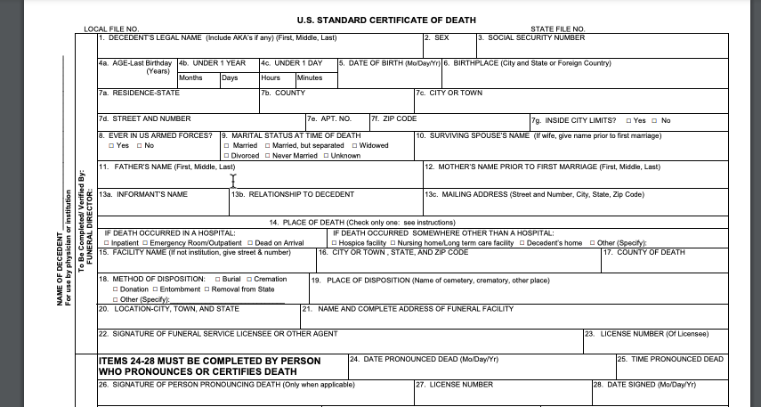

3 Defining “Data”
data /ˈdeɪ.tə/ :
information in an electronic form that can be stored and used by a computer, or information, especially facts or numbers, collected to be examined and >considered and used to help decision-making
– Cambridge Dictionary – sort of 1
3.1 The birth of a dataset
In “The Art of Access”, David Cuillier and Charles N. Davis describe a process of tracking down the life and times of a dataset. Their purpose is to make sure they know how to request it from a government agency. The same idea applies to using data that we acquire elsewhere.
As reporters, we usually deal with data that was created in the process of doing something else such as conducting an inspection or paying a parking ticket. These datasets are created in government as part of carrying out their work. They form the basis of much investigative reporting and they are often the subject of public records and FOIA requests. They were born as part of the government doing its job, without any thought given to how it might be used in another way. These are often called “administrative records”.
Another type of data might be considered “digital trace” data, which often refers to social media posts, online publications and other items that are born in electronic form and posted publicly for anyone to view and use.
Finally, there are datasets that are compiled or collected specifically for the purpose of studying something. They might be collected in the form of a survey or a poll, or they might be monitoring systems such as pollution or weather stations. In this instance, the information has intrinsic value AS information.
3.2 Granular and aggregated data
One of the hardest concepts for a lot of new data journalists is the idea of granularity of your data source. There are a lot of ways to think about this: individual items in a list vs. figures in a table; original records vs. compilations; granular data vs. statistics.
Generally, an investigative reporter is interested in getting data that is as close as possible to the most granular information that exists, at least on computer files. Here’s an example , which might give you a little intuition about why it’s so important to think this way:
Example: Death certificates
When someone dies in the US, a standard death certificate is filled out by a series of officials - the attending physician, the institution where they died and even the funeral direcor.

Here is a blank version of the standard US death certificate form – notice the detail and the detailed instructions on how it is supposed to be filled out.
A good reporter could imagine many stories coming out of these little boxes. Limiting yourself to just to COVID-19-related stories: You could profile the local doctor who signed the most COVID-19-related death certificates in their city, or examine the number of deaths that had COVID as a contributing, but not underlying or immediate, cause of death. Or maybe you would want to map the deaths to find the block in your town most devastated by the virus.
Early in the pandemic, Coulter Jones and Jon Kamp of the Wall Street Journal examined the records from one of the few states that makes them public, and concluded that “Coronavirus Deaths were Likely Missed in Michigan, Death Certificates Suggest”

But you probably can’t do that. The reason is that, in most states, death certificates are not public records and are treated as secrets. 2. Instead, state and local governments provide limited statistics related to the deaths, usually by county, with no detail.
Here’s an example from Arizona — note that we can only see statistics in the way the data source has decided we want to examine them, without access to the underlying information. There’s no way to look at age and race and gender combined for each county, just the generalized statistics for each category alone.
Here are some of the typical (not universal) characteristics of granular vs. aggregated data:
| Granular | Aggregate |
|---|---|
| Intended for some purpose other than your work | Intended to be presented as is to the public |
| Many rows (records), few columns (variables) | Many columns (variables), few rows (records) |
| Requires a good understanding of the source | Explanatory notes usually come with the data |
| Easy to cross-reference and compile | Often impossible to repurpose |
| Has few numeric columns | May be almost entirely numerical |
| Is intended for use in a database | Is intended for use in a spreadsheet |
We often have to consider the trade-offs. Granular data with the detail we need - especially when it involves personally identifiable information like names and addresses - can take months or years of negotiation over public records requests, even when the law allows it. It’s often much easier to convince an agency to provide summarized or incomplete data. Don’t balk at using it if it works for you. But you lose flexibility and have to live with the statistics compiiled for you if you have to settle..
For our purposes, it’s important to remember that we can always create aggregated numbers like the ones shown in the Arizona COVID page out of individual items, but you can never de-aggregate statistics into more granular data like the boxes filled out in death certificates.
3.3 Unit of analysis: Know your nouns
That brings us to one of the most important things you must find out about any data you begin to analyze: What noun describes each row? In statistics, these rows might be called observations or cases. In data science, they’re usually called records. Either way, every row must represent the same thing – a person, a place, a year, a water sample or a school. And you can’t really do anything with it until you figure out what that noun is.
Sometimes the only level you can obtain creates problems. In 2015, we did a story at The New York Times called “More Deportation Follow Minor Crimes, Records Show” . The government had claimed it was only removing hardened criminals from the country, but our analysis of the data suggested that many of them were for minor infractions.
In writing the piece, we had to work around a problem in our data: the agency refused to provide us anything that would help us distinguish one individual from another. All we knew was that each row represented one deportation, not a person. Without a column that uniquely identified people – say, name and date of birth, or some scrambled version of an their DHS number – we had no way to even estimate how often people were deported multiple times. If you read the story, you’ll see the very careful wording, except when we had reported out and spoken to people on the ground.
3.4 Further reading
“Basic steps in working with data”, the Data Journalism Handbook, Steve Doig, ASU Professor. He describes in this piece the problem of not knowing exactly how the data was compiled.
“Counting the Infected” , Rob Gebellof on The Daily, July 8, 2020.
“Spreadsheet thinking vs. Database thinking”, by Robert Kosara, gets at the idea that looking at individual items is often a “database”, and statistical compilations are often “spreadsheets”.
“Tidy Data”, in the Journal of Statistical Software (linked here in a pre-print) by Hadley Wickham , is the quintessential article on describing what we think of as “clean” data. For our purposes, much of what he describes as “tidy” comes when we have individual, granular records – not statistical compilations. It’s an academic article, but it has the underlying concepts that we’ll be working with all year.
3.5 Exercises
Get a copy of a parking ticket from your local government, and try to imagine what a database of those would look like. What would every row represent? What would every column represent? What’s missing that you would expect to find, and what is included that surprises you?
The next time you get a government statistical report, scour all of the footnotes to find some explanation of where the data came from. You’ll be surprised how often they are compilations of administrative records - the government version of trace data.
I flipped the order of these two definitions!↩︎
See “Secrecy in Death Records: A call to action”, by Megain Craig and Madeleine Davison, Journal of Civic Information, December 2020↩︎